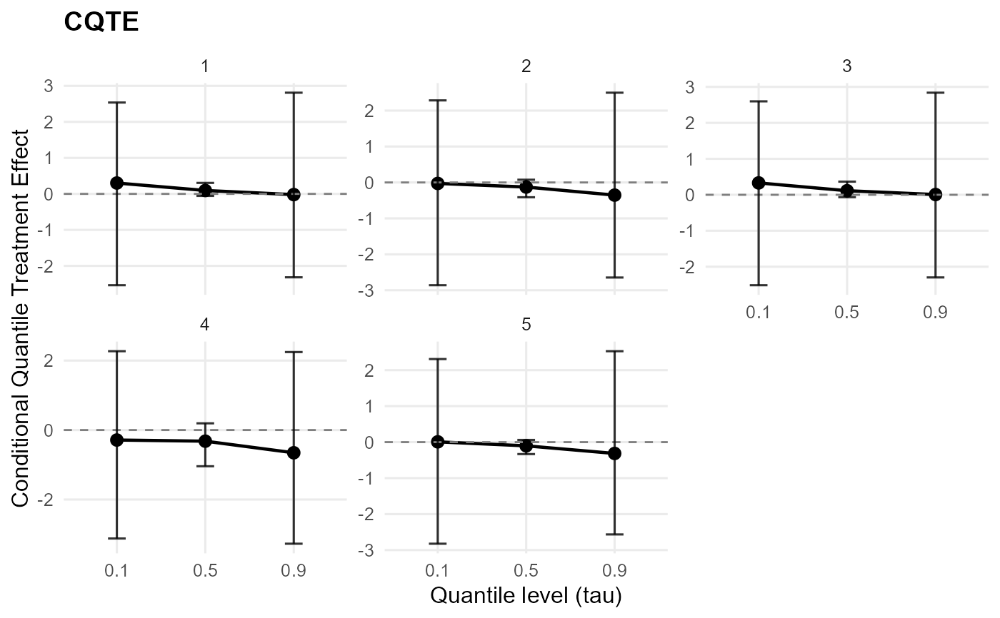
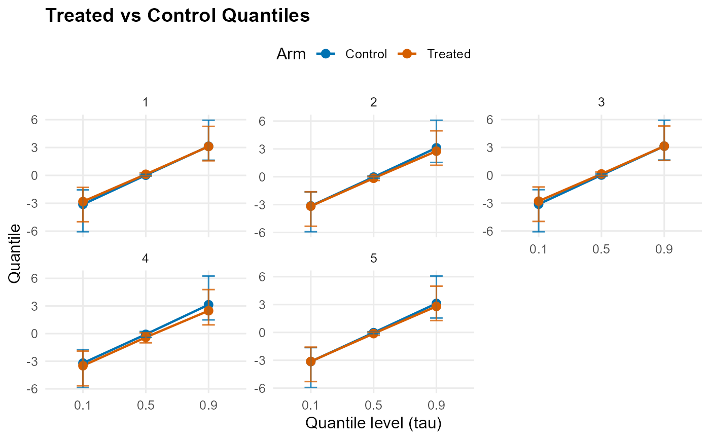

Plot QTE-style effect summaries
plot.causalmixgpd_qte.Rdplot.causalmixgpd_qte() visualizes objects returned by
qte, qtt, and cqte. The
type parameter controls the plot style. When type is omitted,
cqte() objects default to "effect" and, when multiple
quantile levels are present, facet_by = "id". Whenever quantile index
appears on the x-axis, it is shown as an ordered categorical axis with
equidistant spacing:
"both"(default): Returns a list with bothtrt_control(treated vs control quantile curves) andtreatment_effect(QTE curve) plots"effect": QTE curve vs quantile levels (probs) with pointwise CI error bars"arms": Treated and control quantile curves vsprobs, with pointwise CI error bars
Arguments
- x
Object of class
causalmixgpd_qte.- y
Ignored.
- type
Character; plot type:
"both"(default): returns a list with both arm curves and treatment-effect plots"effect": QTE curve with pointwise CI error bars"arms": treated and control quantile curves with pointwise CI error bars
- facet_by
Character; faceting strategy when multiple prediction points exist:
"tau"(default): facets by quantile level"id": facets by prediction point
- plotly
Logical; if
TRUE, convert theggplot2output to aplotly/htmlwidgetrepresentation via.wrap_plotly(). Defaults togetOption("CausalMixGPD.plotly", FALSE).- ...
Additional arguments passed to ggplot2 functions.
Value
A list of ggplot objects with elements trt_control and treatment_effect
(if type="both"), or a single ggplot object (if type is "effect" or
"arms").
Details
The effect view emphasizes the quantile contrast \(\tau \mapsto Q_{Y^1}(\tau) - Q_{Y^0}(\tau)\), while the arms view shows the treated and control quantile functions that generate that contrast. For conditional CQTE objects, faceting can separate covariate profiles so the same quantile contrast is compared across prediction settings.
These graphics visualize posterior summaries of the effect object itself. They are therefore downstream of model fitting and downstream of the causal prediction step.
Examples
# \donttest{
N <- 25
X <- data.frame(x1 = stats::rnorm(N))
A <- stats::rbinom(N, 1, 0.5)
y <- abs(stats::rnorm(N)) + 0.1
X_new <- X[1:5, , drop = FALSE]
mcmc_small <- list(niter = 100, nburnin = 50, thin = 1, nchains = 1, seed = 1)
cb <- build_causal_bundle(y = y, X = X, A = A, backend = "sb", kernel = "normal",
components = 3, mcmc_outcome = mcmc_small, mcmc_ps = mcmc_small)
fit <- run_mcmc_causal(cb, show_progress = FALSE)
#> Defining model
#> Building model
#> Setting data and initial values
#> Checking model sizes and dimensions
#> [Note] This model is not fully initialized. This is not an error.
#> To see which variables are not initialized, use model$initializeInfo().
#> For more information on model initialization, see help(modelInitialization).
#> ===== Monitors =====
#> thin = 1: beta
#> ===== Samplers =====
#> RW sampler (2)
#> - beta[] (2 elements)
#> Compiling
#> [Note] This may take a minute.
#> [Note] Use 'showCompilerOutput = TRUE' to see C++ compilation details.
#> Compiling
#> [Note] This may take a minute.
#> [Note] Use 'showCompilerOutput = TRUE' to see C++ compilation details.
#> running chain 1...
#> Defining model
#> Building model
#> Setting data and initial values
#> Checking model sizes and dimensions
#> [Note] This model is not fully initialized. This is not an error.
#> To see which variables are not initialized, use model$initializeInfo().
#> For more information on model initialization, see help(modelInitialization).
#> ===== Monitors =====
#> thin = 1: alpha, beta_mean, beta_ps_mean, sd, w
#> ===== Samplers =====
#> conjugate sampler (3)
#> - sd[] (3 elements)
#> categorical sampler (17)
#> - z[] (17 elements)
#> RW sampler (9)
#> - alpha
#> - beta_mean[] (3 elements)
#> - beta_ps_mean[] (3 elements)
#> - v[] (2 elements)
#> [Note] Assigning an RW_block sampler to nodes with very different scales can result in low MCMC efficiency. If all nodes assigned to RW_block are not on a similar scale, we recommend providing an informed value for the "propCov" control list argument, or using the "barker" sampler instead.
#> Compiling
#> [Note] This may take a minute.
#> [Note] Use 'showCompilerOutput = TRUE' to see C++ compilation details.
#> Compiling
#> [Note] This may take a minute.
#> [Note] Use 'showCompilerOutput = TRUE' to see C++ compilation details.
#> [Warning] To calculate WAIC, set 'WAIC = TRUE', in addition to having enabled WAIC in building the MCMC.
#> running chain 1...
#> Defining model
#> Building model
#> Setting data and initial values
#> Checking model sizes and dimensions
#> [Note] This model is not fully initialized. This is not an error.
#> To see which variables are not initialized, use model$initializeInfo().
#> For more information on model initialization, see help(modelInitialization).
#> ===== Monitors =====
#> thin = 1: alpha, beta_mean, beta_ps_mean, sd, w
#> ===== Samplers =====
#> conjugate sampler (3)
#> - sd[] (3 elements)
#> categorical sampler (8)
#> - z[] (8 elements)
#> RW sampler (9)
#> - alpha
#> - beta_mean[] (3 elements)
#> - beta_ps_mean[] (3 elements)
#> - v[] (2 elements)
#> [Note] Assigning an RW_block sampler to nodes with very different scales can result in low MCMC efficiency. If all nodes assigned to RW_block are not on a similar scale, we recommend providing an informed value for the "propCov" control list argument, or using the "barker" sampler instead.
#> Compiling
#> [Note] This may take a minute.
#> [Note] Use 'showCompilerOutput = TRUE' to see C++ compilation details.
#> Compiling
#> [Note] This may take a minute.
#> [Note] Use 'showCompilerOutput = TRUE' to see C++ compilation details.
#> [Warning] To calculate WAIC, set 'WAIC = TRUE', in addition to having enabled WAIC in building the MCMC.
#> running chain 1...
qte_result <- cqte(fit, probs = c(0.1, 0.5, 0.9), newdata = X_new)
#> [cqte] Preparing CQTE inputs
#> [cqte] Preparing propensity-score adjustment
#> [cqte] Predicting treated-arm quantiles
#> [cqte] Predicting control-arm quantiles
#> [cqte] Aggregating CQTE estimates
plot(qte_result) # CQTE default: effect plot (faceted by id when needed)

plot(qte_result, type = "effect") # single QTE plot
 plot(qte_result, type = "arms") # single arms plot
plot(qte_result, type = "arms") # single arms plot

# }